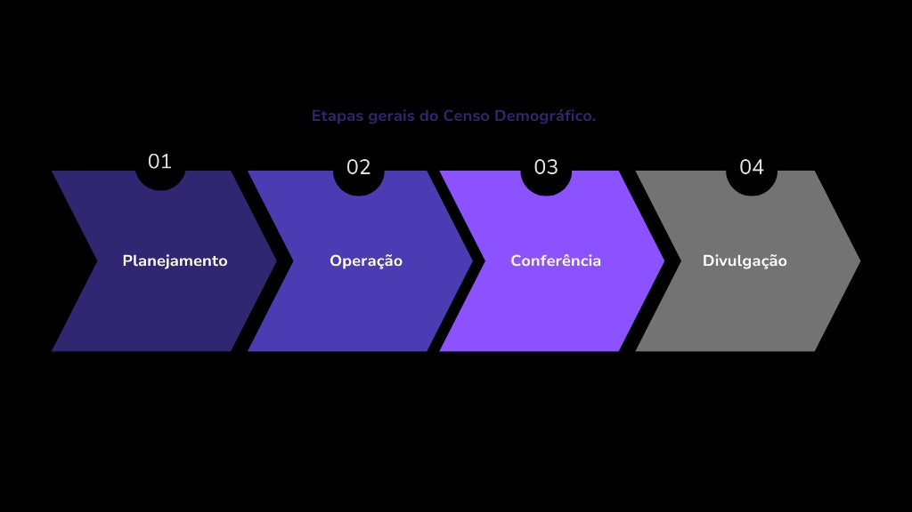
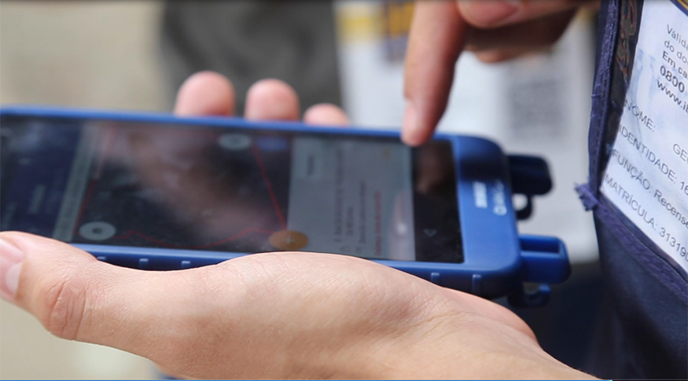
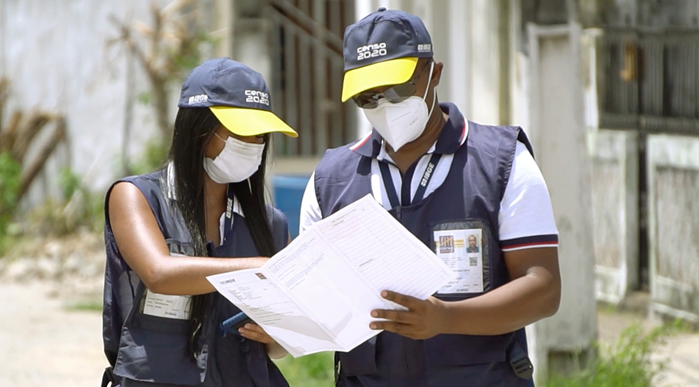
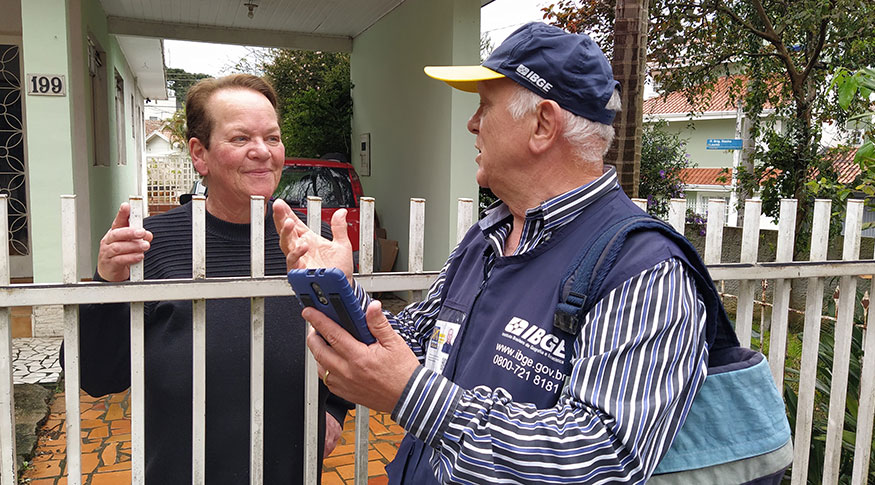

Módulo 2 | Aula 2
Dados populacionais e o Censo Demográfico
O Censo Demográfico
Após compreendermos a importância dos dados populacionais para a Saúde Pública e explorarmos os principais repositórios nacionais, como IBGE, DATASUS e Ipea, agora aprofundaremos nosso olhar sobre uma das principais fontes de informações populacionais do país: o Censo Demográfico. O Censo é a base que permite conhecer, com precisão e detalhe, quem somos, onde estamos e em quais condições vivemos, fornecendo insumos essenciais para análises demográficas, socioeconômicas e para o planejamento de políticas públicas, especialmente no campo da saúde.
O que é o Censo?
O Censo Demográfico é uma das mais antigas e importantes pesquisas estatísticas realizadas em todo o mundo. Ele tem como objetivo contar e descrever a população de um país em um determinado momento, fornecendo um retrato detalhado de suas características demográficas, sociais e econômicas.
Os primeiros censos surgiram no século XIX, a partir da necessidade de planejamento de políticas públicas, arrecadação de impostos e alistamento militar. No caso do Brasil, o primeiro recenseamento populacional foi realizado em 1872 e coletou informações básicas sobre sexo, idade, estado civil, cor e condição de liberdade, refletindo o contexto social da época.
Após o primeiro Censo, o país realizou outros levantamentos populacionais com periodicidade variável. Então, a partir de 1940, o Instituto Brasileiro de Geografia e Estatística (IBGE), responsável pelo desenvolvimento e aplicação do censo no Brasil, passou a conduzir o Censo Demográfico de forma regular e padronizada, garantindo comparabilidade aos dados e a construção de séries históricas sobre a população e o território, consolidando-se como uma importante fonte de informação nacional.
O Censo Demográfico brasileiro normalmente é realizado a cada 10 anos e permite identificar tendências populacionais ao longo do tempo, como envelhecimento, urbanização e mudanças nos arranjos familiares. Sua abrangência é nacional e inclui todos os locais onde há moradores permanentes, desde áreas indígenas até assentamentos informais. Apenas setores sem população residente — como zonas exclusivamente comerciais, industriais, militares sem alojamento, parques e terrenos vazios — ficam fora da coleta. Já instituições com residentes, como asilos, penitenciárias e alojamentos, são tratadas como domicílios coletivos e investigadas por meio de procedimentos específicos, garantindo que o Censo conte toda a população realmente residente no país.
O Censo oferece o retrato mais completo e detalhado da população, servindo como base para praticamente todas as políticas públicas do país. Ele fornece as informações necessárias para identificar necessidades, monitorar desigualdades, planejar serviços e distribuir recursos de forma mais justa e eficiente.
O rigor metodológico adotado pelo IBGE no desenvolvimento do Censo Demográfico é o que garante confiabilidade, comparabilidade e utilidade aos dados coletados. Sem essa padronização, seria impossível planejar adequadamente políticas públicas de saúde, educação, habitação e infraestrutura. Além de sua função técnica e estatística, o Censo tem valor social e político inestimável, pois torna visíveis todos os grupos populacionais, incluindo aqueles historicamente marginalizados, como comunidades quilombolas, indígenas e populações rurais.
O Censo não é apenas uma pesquisa estatística, é um instrumento estratégico para o desenvolvimento, a garantia de direitos e o fortalecimento da gestão pública baseada em evidências.
Como é feito o Censo?
O Censo Demográfico é uma das maiores operações estatísticas do país, envolvendo milhares de recenseadores, supervisores e técnicos. Para que a realização do Censo seja possível, o IBGE mobiliza um extenso aparato metodológico e logístico que envolve planejamento, operação, conferência e divulgação. O rigor e a abrangência dessas etapas garantem a qualidade e a comparabilidade dos dados censitários ao longo do tempo.
Vamos detalhar a seguir cada uma dessas etapas e suas fases:

Etapas gerais do Censo Demográfico.
Planejamento
É durante o planejamento que os temas e as perguntas do Censo são estabelecidos e analisados com base em consultas a diversos grupos.
A elaboração do Censo começa com discussões internas do IBGE, nas quais especialistas definem os temas e formulam perguntas coerentes com outras pesquisas, levando em conta a relevância e o impacto operacional na realização da coleta.
Após a consulta interna, o IBGE realiza uma consulta pública para garantir que o Censo atenda às necessidades de informação da sociedade. Esse processo permite identificar lacunas de dados e definir prioridades.
A comunicação com os usuários dos dados, como universidades e institutos de pesquisa, é essencial para garantir que o Censo produza informações úteis e alinhadas ao interesse público, construindo, de forma democrática e transparente, um levantamento capaz de apoiar estudos e políticas públicas.
Na última etapa do planejamento, o IBGE submete os questionários à avaliação de uma Comissão Consultiva formada por especialistas de diversas áreas, como demografia, estatística, economia, geografia, saúde e políticas públicas, que ajudam a garantir que o Censo produza dados relevantes e de qualidade para a sociedade.
Operação
Nessa fase, tudo é revisado para identificar possíveis falhas ou informações desatualizadas antes do início da coleta. A etapa de Operação também é organizada em quatro fases, ilustradas na imagem a seguir. É nesse momento que a relevância dos setores censitários se torna ainda mais evidente.
Depois das consultas, o IBGE inicia os testes que preparam a coleta de campo. Esses testes verificam se perguntas, questionários, aplicativos e sistemas funcionam corretamente, garantindo que tudo esteja adequado antes de aplicar o Censo em milhões de domicílios.
Antes da coleta, o IBGE atualiza a Base Territorial Censitária, que reúne mapas e informações sobre limites municipais, áreas urbanas e rurais, territórios indígenas, quilombolas e outras localidades, para orientar as equipes de coleta em todo o Brasil.
Após atualizar a base territorial, o IBGE realiza a Pesquisa Urbanística do Entorno, que verifica as áreas ao redor dos domicílios para garantir que ruas, construções e infraestrutura estejam corretamente mapeadas. Essa pesquisa ocorre antes e durante a coleta, permitindo que recenseadores atualizem informações em tempo real.
A fase final é a coleta nos domicílios, etapa mais conhecida pela população. É quando os recenseadores visitam todos os domicílios do país usando dispositivos móveis de coleta. Embora predominantemente presencial, os moradores também podem responder pela internet ou telefone.
Conferência
Após a coleta de dados, o IBGE verifica a precisão e a cobertura dos dados para que nenhum domicílio fique de fora. Logo depois, apura e divulga os resultados do Censo. Essa etapa possui duas fases.
Após a coleta, o IBGE realiza etapas de verificação para garantir a qualidade dos dados. A principal delas é a Pesquisa de Pós-Enumeração (PPE), que funciona como uma auditoria para avaliar se todos os domicílios foram visitados e se as informações estão corretas.
Por fim, o Censo entra na fase de apuração e divulgação dos resultados. As informações coletadas são transformadas em estatísticas públicas, disponibilizadas em diferentes formatos e níveis geográficos, para atender a variados públicos.
Divulgação
Por fim, os resultados são divulgados em etapas:
- Primeiros resultados populacionais (contagem e número de domicílios).
- Características gerais da população.
- Dados detalhados sobre educação, trabalho, renda, migração e outros temas.
As informações ficam disponíveis em portais públicos, especialmente no SIDRA (Sistema IBGE de Recuperação Automática), no site do IBGE, e em bancos de microdados anonimizados, permitindo análises por pesquisadores e gestores públicos.
Como é feita a coleta de dados do Censo?
O Censo é uma operação nacional de enorme complexidade, que exige planejamento detalhado, equipes treinadas e procedimentos padronizados para garantir que os dados obtidos sejam confiáveis e representem toda a população brasileira. Neste tópico vamos percorrer as principais etapas dessa operação, desde o treinamento dos recenseadores até a estrutura hierárquica que dá suporte ao trabalho em campo e entender como os questionários e a amostragem são aplicados.
Recenseadores e treinamento
Os recenseadores estão na ponta da coleta de dados do Censo. São eles que batem na porta de milhões de brasileiros para retratar o país, mas, antes de iniciarem a coleta em campo, os recenseadores passam por treinamentos que buscam:

(Foto: Simone Mello/Acervo IBGE Notícias)
Familiarização com os Dispositivos Móveis de Coleta (DMC)
Os recenseadores aprendem a usar os dispositivos móveis que registram os dados coletados.
Esses dispositivos são equipados com aplicativos desenvolvidos especialmente para o Censo, incluindo o questionário digital e ferramentas de georreferenciamento.

(Foto: Acervo IBGE)
Técnicas de abordagem
Recebem treinamento sobre como abordar os moradores de maneira eficiente e ética, garantindo que as informações sejam coletadas da melhor forma possível.

(Foto: Acervo IBGE)
Conhecimento dos Setores Censitários
Cada recenseador estuda os mapas e as características da área que irá cobrir, para entender melhor os setores censitários designados a eles.
Modelos de questionário e amostragem
O Censo utiliza dois modelos de questionários no levantamento, o que permite produzir estatísticas nacionais com cobertura ampla e, ao mesmo tempo, permitir análises mais profundas em alguns temas, essenciais para estudos demográficos, sociais e epidemiológicos.
É mais curto e aplicado na maioria dos domicílios. Investiga características essenciais do domicílio e dos moradores, tais como:
- Identificação do domicílio.
- Lista de moradores do domicílio.
- Características do domicílio.
- Identificação étnico-racial dos moradores.
- Informação de registro civil.
- Educação dos moradores.
- Rendimento do responsável pelo domicílio.
- Mortalidade.
É mais detalhado, aplicado a uma fração específica dos domicílios. Inclui todos os blocos do questionário básico mais uma série de temas adicionais e aprofundados, tais como:
- Trabalho e rendimento.
- Nupcialidade e composição de núcleo familiar.
- Fecundidade.
- Migração.
- Mobilidade da população.
- Pessoas com deficiência.
- Autoidentificação religiosa ou de crença.
No Censo, a amostragem é feita de forma estratificada, ou seja, a população é dividida em grupos menores, que, nesse caso, são os setores censitários, vistos anteriormente. Em cada setor, os domicílios selecionados para responder ao questionário da amostra são escolhidos por meio de um processo sistemático e com equiprobabilidade, garantindo que todos tenham a mesma chance de serem incluídos. As frações amostrais (percentual de domicílios que responderá ao questionário mais detalhado) variam conforme o tamanho do município: cidades menores têm frações maiores, enquanto cidades grandes utilizam frações menores, podendo ir de 5% a 50%.
Execução da coleta e supervisão
A coleta em campo ocorre em diferentes etapas:
Os recenseadores iniciam o trabalho visitando os domicílios nos setores que lhes foram atribuídos. Eles se identificam, explicam o objetivo do Censo e realizam a entrevista presencialmente. Em situações específicas, como em áreas com restrições de acesso, a coleta pode ocorrer via internet.
Os recenseadores seguem um roteiro padronizado na aplicação dos questionários. Quando há recusa, retornos são agendados e, caso seja necessário, o caso é encaminhado para supervisão.
As entrevistas são registradas nos Dispositivos Móveis de Coleta (DMC), que também fazem o georreferenciamento dos domicílios, garantindo que todos os endereços do setor sejam corretamente visitados, assim evitando omissões ou duplicações.
A supervisão é essencial para assegurar que os dados sejam coletados de forma rigorosa. O Agente Censitário Supervisor (ACS) revisa as entrevistas enviadas pelos recenseadores e realiza reentrevistas em uma amostra dos domicílios para checar a qualidade da coleta. Ao final, o IBGE ainda faz análises de subenumeração e superenumeração, comparando os resultados com registros administrativos e pesquisas complementares, buscando atingir a cobertura mais próxima possível de 100% dos domicílios ocupados.
Desafios do Censo Demográfico 2022
Realizar o Censo em um país com as dimensões do Brasil apresenta uma série de desafios logísticos e operacionais. Alguns dos principais desafios enfrentados durante o Censo de 2022 incluem:
Comunidades ribeirinhas, zonas rurais, comunidades e condomínios fechados exigem estratégias diferenciadas, transporte especial e protocolos de segurança para garantir a integridade dos recenseadores.
A taxa média de recusa chegou a 2,43%, especialmente em áreas densamente povoadas. Técnicas de comunicação e intervenções dos ACS foram essenciais para reduzir esse problema.
Em regiões de alta renda muitas entrevistas só foram concluídas após campanhas de sensibilização para incentivar a participação dos moradores.
Embora o envio diário de dados facilite o monitoramento, algumas regiões enfrentaram instabilidade de conexão e problemas de transmissão de dados, exigindo o uso de postos de coleta alternativos como parte de um plano de contingência.
A escassez de recenseadores e de recursos financeiros impactou a operação. Em algumas áreas, foi necessário prorrogar o prazo de coleta e fazer ajustes orçamentários para garantir que o Censo fosse concluído com sucesso.
O rigor metodológico adotado pelo IBGE no desenvolvimento do Censo Demográfico é o que garante confiabilidade, comparabilidade e utilidade aos dados coletados. Sem essa padronização, seria impossível planejar adequadamente políticas públicas de saúde, educação, habitação e infraestrutura.
Como consultar os dados do Censo?
Você sabe onde acessar diferentes informações sobre o Censo Demográfico?
De maneira geral, para obter acesso a informações e resultados dos Censos, você pode:
- Acessar a página do Censo no IBGE.
- Acessar o SIDRA.
- Acessar o Hotsite do Censo 2022.
- Acessar a Plataforma Geográfica Interativa (PGI).